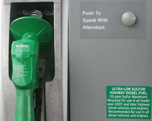

Long renowned for superior fuel economy, but notorious for foul exhaust, diesel cars have never been widely popular in the United States. But that soon may change as a new generation of “clean” diesel vehicles come down the pike. These won’t be the smoke-spewing, smelly, noisy and underpowered engines of the ’70s. And by the end of this decade, we’ll have diesel cars that meet the same stringent emission standards as those for gasoline vehicles.
Diesel engines generally deliver about 30 percent more miles per gallon than comparable gasoline engines; they also last significantly longer. But the first step in actually making diesel a much “greener” option is a monumental change in the fuel itself.
Starting in October 2006, new ultra-low sulfur diesel fuel began to replace traditional diesel fuel, per a mandate by the U.S. Environmental Protection Agency (EPA). The new variety now makes up 80 percent of the U.S. diesel supply; by 2010, EPA requires it be the only diesel fuel on the market. To put this switch in perspective, many liken it to the ’70s federal order that removed lead from gasoline, allowing for cleaner tailpipe emissions through the use of catalytic converters.
This new clean diesel fuel has 97 percent less sulfur, down from 500 parts per million to just 15 parts per million. This will allow new diesel engines to reduce by 90 percent or more their emissions of soot and nitrogen oxides. These pollutants create smog and particulate matter that aggravates respiratory problems and can lead to premature deaths, especially among children and the elderly. The biggest savings will come from heavy-duty and commercial transportation, which largely rely on diesel. According to the EPA, once fully implemented, clean diesel will lead to more than $70 billion in annual savings on environmental and public health costs and prevent 20,000 premature deaths.
In recent years, the popularity of light-duty diesel pickup trucks expanded diesel beyond truck stops to many ordinary filling stations. So, while other alternative fuels such as ethanol and hydrogen face delays from the lack of fueling stations, diesel has the advantage of an existing infrastructure. The newer, cleaner diesel will also improve emissions from B20 (20 percent biodiesel, 80 percent petro-diesel) and other concentrations of biodiesel.
The new diesel fuel will cost about 3 to 5 cents more per gallon than its predecessor, but the long-term benefits far outweigh the extra short-term costs. Experts expect the new fuel to run smoothly in older diesel cars. In some cases, though, the new fuel might loosen deposits in the fuel tank, so initially watch for leaks or premature fuel filter plugging.
Regulations of diesel emissions also are changing rapidly. To meet new, stricter national standards, diesel cars will need after-treatment methods in their exhaust systems; options include a variety of catalytic converters, a particulate trap (to remove soot) and urea injection. In the latter, urea injected into the exhaust delivers ammonia that allows a final converter to reduce nitrogen oxide emissions. The technology exists, but automakers are waiting for the EPA to decide who will refill the urea injection system; the government is uneasy about drivers servicing their own emission-control systems. In the near term, new diesel cars will be scarce as automakers develop the new systems. But expect a slew of new options in the future, starting with the 2008 model year.
I’ve driven clean diesel cars in Europe and preproduction models for the U.S. market and am quite impressed. Not only are modern diesel engines more fuel-efficient than their gasoline counterparts, they produce considerable torque with smooth acceleration, which makes for a truly enjoyable driving experience. The common reaction from drivers who experience newer diesels is amazement at how smooth and quiet they are.
To learn more about the new diesel fuel and cleaner diesel cars, visit the Clean Diesel Fuel Alliance.
|
 TABITHA ALTERMAN The diesel fuel at a pump near you has changed significantly. The new, “clean” diesel will dramatically reduce pollution; according to the EPA, the switch will ultimately save $70 billion in environmental and public health costs and prevent 20,000 premature deaths. |
|
|